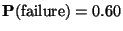

Exercise 1
Exercise 2

We now that

and
 .
By the multiplication principle we find
.
By the multiplication principle we find
Repeating this process for all combination of results and ratings we construct the table of joint probability.
| Panel rating | ||||
| Poor | Fair | Good | ||
| Failure | 0.30 | 0.18 | 0.12 | |
| Result | Moderate | 0.06 | 0.12 | 0.12 |
| Major | 0.01 | 0.03 | 0.06 | |

To find the conditional probability of major given poor, we need
 from the seventh path on the tree. Also,
from the seventh path on the tree. Also,
 can be obtained by adding the probabilities for all paths including a poor rating.
can be obtained by adding the probabilities for all paths including a poor rating.
 .
Thus
.
Thus
Exercise 3

Exercise 4
By calculator, s=1.834. Because there are 1533 observations, it would make virtually no difference whether we divided by n or n-1. In fact, calculations show
 ,
calculated by dividing by n.
,
calculated by dividing by n.
Recall that about 68 of the data should fall within one standard deviation of the mean. The range is 0.643 to 4.311. It includes the values 1, 2, 3, and 4 and contains 1134 observations. This is 1134/1533=0.740 or 74 of the data. The Empirical Rule works surprisingly well, despite the skewness of the data.
We note that 287+364+332=983 forms claim at least 1 and at most 3 deductions, so
Exercise 5
We assumed that the probability of winning was the 0.3 on all three bids and that whether or not one bid won didn't change the probability that any other bid would win. If there are no systematic difference among the bids, we can't think of any reason why the probability would change. Barring collusion, there's no obvious reason for dependence, either. The assumptions seem at least fairly reasonable.
Exercise 6
| Y1 | 0 | 16 | 32 | 48 | 64 |
| 1/16 | 4/16 | 6/16 | 4/16 | 1/16 |
| Y2 | 1 | 33 |
| 1/32 | 31/32 |
Second criterion: Median. Median of Y1 is 32 but median of Y2 is 33, so Y2 is better.